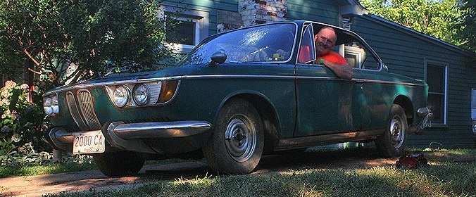

Introduction
Welcome. This restoration blog is intended to provide a rare glimpse into the restoration of a 1966 BMW 2000c. This car is an early 66 build and is number 36 in production of the 3,000 "C" (automatic) cars produced. It also is most likely one of the first 100 of the 10,000 e120 C/CS/CA models produced. I say "rare" glimpse into a restoration because when I decided to embark on a 2000c restoration and I searched the internet for information, I couldn't find any. This applies to all of the Neue Klasse CS models collectively also known as the e120 series. There aren't any printed publications to speak of either. I feel like a trail blazer. So, I am going to doucment my progress. I am completely disassemble the car, removing all rust, welding in replacment panels, patching, glazing, smoothing, priming, block sanding, and painting the car myself. Then I will rebuild, bore, and stroke the engine with a more advanced cam, lighter flywheel. Finally I will modernize the brakes and suspenison.
Buying it, Bringing it Home, First Impressions...
A Rare Automobile
There were only roughly 13,000 BMW e120s produced from 1965-69. Compare that to 100,000 BMW 2002s from 1968-76. Roundel magazine columnist Mike Self notes in the February 2018 edition of the magazine that "the last survival estimate [he] saw for the 2002 in the U.S. is roughly 15,000 cars." Using similar math to predict e120 survivors would provide a number at roughly 2,000 cars. I suspect the number may actually be lower than that. |
|
{kind=link}
Technical Data & Color Options
The CS came with the signature M10 4-cylinder engine with a 9.3:1 compression ratio producing 120 hp. The cylinder head is a "121" with a 42.1 mm pin-to-deck coupled with 5.2mm-domed pistons (piano tops). The C also came with the signature M10 4-cylinder engine, but with lower compression ratio than the CS at 8.5:1 producing only 100 hp. The cylinder head is a "121" with a 42.3 mm pin-to-deck coupled with flat top pistons.
|
|
{kind=link}